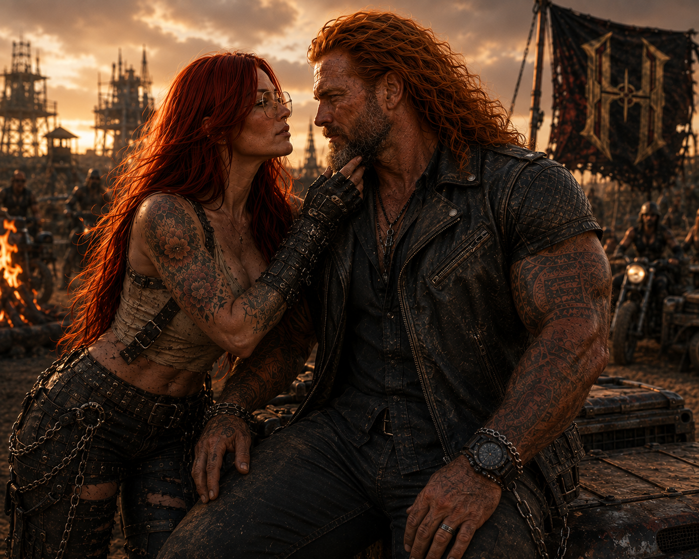
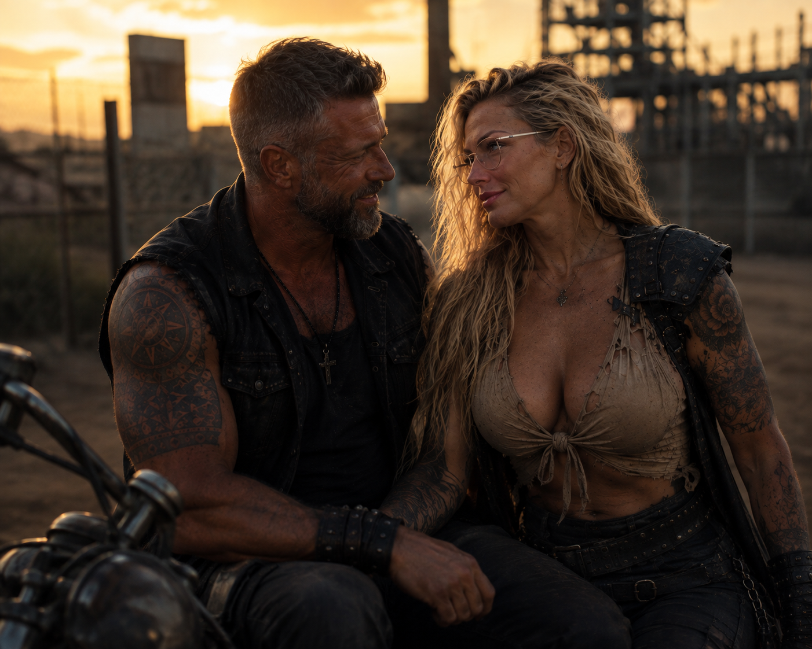

LINHAGEM 01 // CINCO ARQUIVOSJack
Jack
& Alice
Alucard, Nicolai, Mary, Diana e Isolde. Todos carregam Myers Connor.
ABRIR ARQUIVOS DOS FILHOS →
LINHAGEM 02 // DOIS ARQUIVOS RECUPERADOSMark
Mark
& Ariani
Pollyana, Nathan e James. Todos carregam Salvatore Connor; um arquivo continua selado.
ABRIR ARQUIVOS DOS FILHOS →